Lab Meeting -- 12/02/26 -- Branwen Snelling
In the manual case, the expression for the derivative is derived and a function is written to calculate it.
def f(x):
return x * sin(x)
def dfdx(x):
return x * cos(x) + sin(x)
In the symbolic case a program (e.g. SymPy) is used to derive the expression.
from sympy import sin
from sympy.abc import x
def f(x):
return x * sin(x)
y = f(x)
dydx = y.diff(x)
print(dydx) # x*cos(x) + sin(x)
Approximate derivatives by evaluating the function at nearby points.
\[\begin{aligned} f^\prime(x) \approx \frac{f(x + \Delta x) - f(x)}{\Delta x} \end{aligned} \]This is a forward difference approximation. One can also use a backward difference and get higher order approximations by combining these or adding more terms to a Taylor series.
Calculates exact derivatives directly on the program by breaking it down into intermediate variables and applying the chain rule.
In this AD mode we calculate the value of each intermediate variable and the value of its derivative (known as primals and tangents).
To calculate derivatives we make use of the chain rule.
Let's take a function with two arguments.
def f(x, y):
return x * y + sin(x)


Now we can calculate gradients with respect to each parameter alongside the computation of our functions when we run the program.
The cost of forward mode computation scales in proportion to the number of input variables we have, because we compute gradients alongside values as we step through the computational graph.
This mode also makes use of the chain rule but in the opposite direction. The forward pass calculates the values of all the intermediate variables.
The reverse pass calculates the gradients of the output with respect to each intermediate variable.

AD literature, including the JAX documentation, often uses the terms Jacobian-vector products (JVPs) and vector-Jacobian products (VJPs).
Say we have a function with many inputs and many outputs. The Jacobian is a matrix that contains all the partial derivatives of the outputs with respect to the inputs.
Each element of the Jacobian shows how sensitive output $m$ is to input $n$.
This means we can use the Jacobian as a linear map. Multiply the Jacobian by a $\delta x$ (a change in the inputs) and we can see how that change propagates to the outputs.
\[\begin{aligned} \delta f \approx J \delta x \end{aligned} \] This is a Jacobian-vector product (JVP) and is computed during forward mode AD.Reverse mode AD computes vector-Jacobian products (VJPs).
\[\begin{aligned} u^T J \end{aligned} \]$u$ is some objective direction on the output (e.g. we want to maximise this output). The VJP will tell us which inputs have the most influence on that output objective.
Where $n$ is number of inputs and $m$ number of outputs
| Mode | Cost scaling | Ideal scenario |
|---|---|---|
| Forward | Proportional to $n$ | $n \ll m$ |
| Reverse | Proportional to $m$ | $m \ll n$ |
Reverse mode is well suited to applications where there are a lot of optimisation parameters and few outputs.
Reverse mode is more memory intensive because it stores intermediate values during the forward pass, to be used in the reverse pass (if you hear reference to a tape in autodiff, this is what it means).
In Python, the major ML libraries are all autodiff enabled and primarily use reverse mode.
In Julia there are many different implementations to choose from, with different pros and cons depending on your use case.
JAX is a library designed for high performance numerical programs in Python.
To pull this off, it implements code transformations, including autodiff, and compilations, which rely on certain constraints being met in the code we write.
JAX's AD system does not require pure functions but they are strongly recommended when writing JAX code as a whole. Functional purity means: